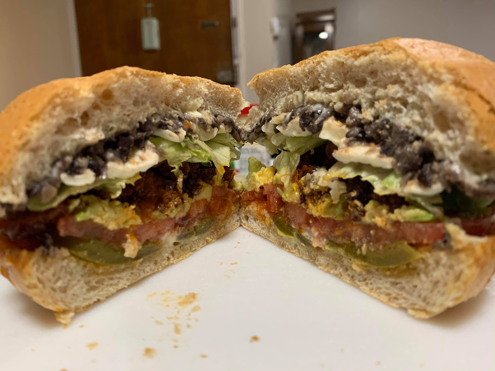

Chorizo Torta

Ingredients:
- 1/2 lb Chorizo sausage
- Refried black beans
- Bolillo, telera, or kaiser rolls (or any oval shaped bread)
- Oaxaca cheese
- Avocado
- Tomatoes
- Shredded lettuce
- Sliced pickled jalapeños
Instructions:
- Prepare and slice the tomatoes, avocado, lettuce and jalapeños. Optionally, toast the bread.
- Cut a slit on the chorizo sausages to remove the fillings and discard the casings.
- Fry the chorizo in a pan over medium heat for about 8 imnutes or until completely browned.
- Apply mayonnaise to both slices of bread. Layer the the ingredients in order starting from the bottom: jalapeños, tomato, avocado, chorizo, lettuce, cheese, and beans. It will likely be easier to apply the cheese and beans to the top slice of bread before adding the other ingredients.